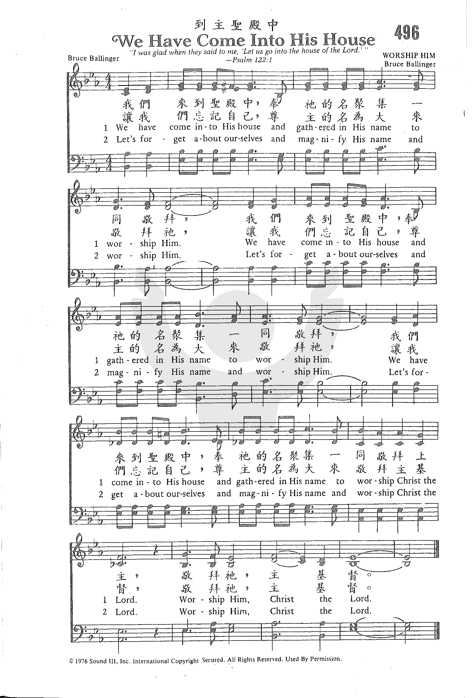

|
|
|
|
We Have Come into His House (Let's Forget About Ourselves)
by The Maranatha! Singers |
496 到主聖殿中 |
|
https://www.zanmeishige.com/tab/26068.html?songbook=1&index=496

|
|
|
|
|

- We Have Come into His House (Let's Forget About Ourselves) by The Maranatha! Singers https://youtu.be/Sa2jsWT0oSc
- We Have Come Into His House - Harding
University Concert Choir [with lyrics]
https://youtu.be/VEBmKvLDsWg
1270
We Have Come Into His House 到主圣殿中
| Text: | We Have Come into His House |
| Author: | _Bruce Ballinger |
| Tune: | [We have come into His house] |
| Composer: | Bruce Ballinger |
| Short Name: | Bruce Ballinger |
| Full Name: | Ballinger, Bruce |
| Birth Year: | 1945 |
| Death Year: | 2004 |
Bruce Ballinger, passed away at the Lakeridge Health Center in Oshawa Ontario on Friday October, 29th, 2004. Born in St. Hyacinthe, Quebec on April 19th, 1945. He was the son of the late Gordon and Edna (Latto) Ballinger.
Bruce graduated from McMaster University, Hamilton Ontario and McGill University, Montreal Quebec. He was an ordained minister with the Assemblies of God in the United States and served as Minister of Music in several Churches in, Montreal, Brampton, Ontario, Houston Texas, and Denver Colorado. He was the composer of many contemporary Christian worship hymns including, "We Have Come Into His House."
http://www.fundyfuneralhome.com/notices/Bruce-Ballinger (excerpts)
We Have Come Into His House -- Bruce Ballinger

His name was Bruce Ballinger, and he must have been emotionally affected one day when he was 31 years old to write something, to suggest to others how they might change a habit. Perhaps this habit had grown old, and Bruce wanted to rekindle some feelings that he remembered had more fervor at one time. In fact, he succeeded. His son, Leigh, gives us insight into what his dad was doing and where he was, so enjoy hearing some personal reflections from Bruce’s offspring about “We Have Come Into His House” (perhaps thinking of a house not unlike the one shown here).